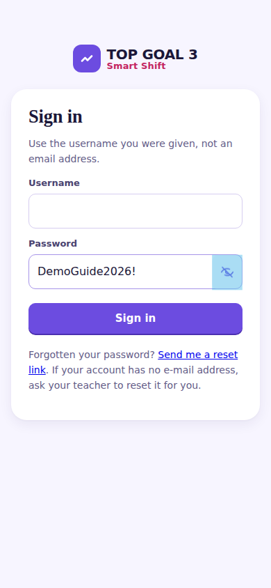
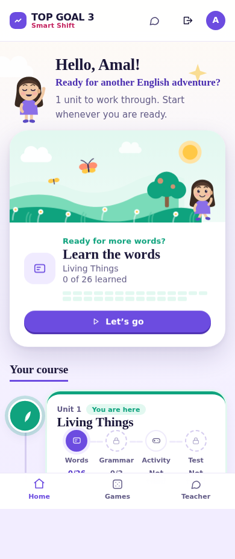
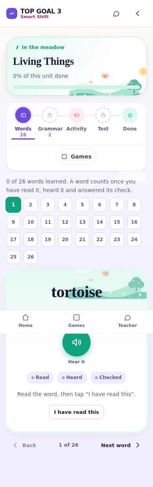
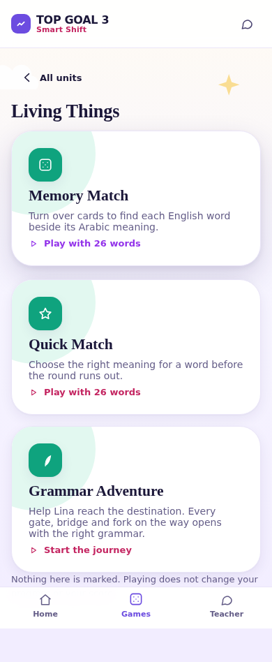
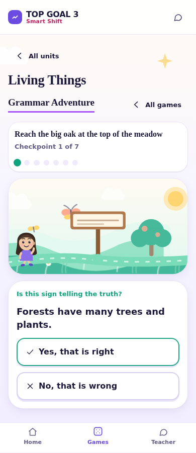
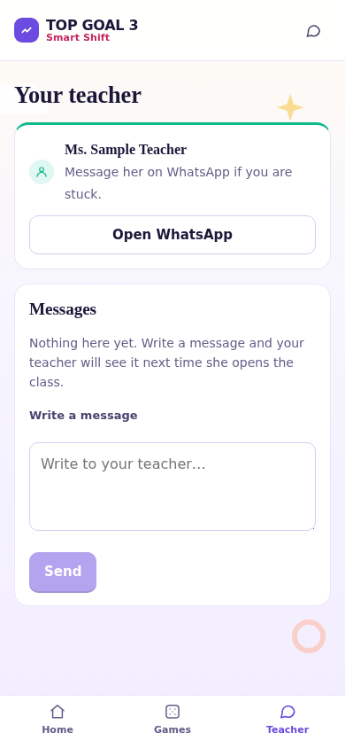

Your Guide
How to use Smart Shift — everything you need, step by step.
1. How to sign in
- Open the website your teacher gave you.
- Type your username.
- Type your password.
- Press Sign in.

Amal and amal both work. But your password must be
exactly right — every big letter matters.
Can't see what you typed?
Press the little eye at the end of the password box. It shows your password so you can check it. Press it again to hide it.
2. Your first time
The first time you sign in, you choose your own password.
- Type the password your teacher gave you.
- Think of a new one, and type it twice.
- Press the button to save it.
- Sign in again with your new password.
3. Your home page
This is where you start. It says hello, and shows you what to do next.

At the bottom of the screen there are three buttons:
| Button | What it does |
|---|---|
| Home | Back to this page. |
| Games | Games to play. |
| Teacher | Messages to your teacher. |
4. Choosing a unit
Under Your course you will see your units. You are here shows the one you are working on now.
Every unit has four steps, and you do them in order:
- Words — learn the new words.
- Grammar — read how the words go together.
- Activity — practise.
- Test — show what you know.
5. Words
You see one word at a time: the English word, and what it means in Arabic.

- Read the English word.
- Read what it means.
- Listen to it if you can.
- Go to the next word.
6. Listening to a word
Press the sound button to hear the word.
7. Grammar
Grammar pages show you how English works, with examples. Some have a picture from your book.

Read it carefully. The activity questions come from what is here.
8. Activities
Activities are practice. You answer questions about the words and the grammar you have just learnt.

There are different kinds — choose the right answer, say if a sentence is true or false, put words in order, match things together.
9. The unit test
The test comes last, after you have finished the other steps.
- Find somewhere quiet.
- Read each question carefully.
- Answer all of them.
- Send it when you are ready.
10. How you are doing
Your home page shows how far you have gone — how many words you have learnt, and which steps are done. It fills up as you work.
Your teacher can see this too, so she knows when to help you.
11. Games
Press Games at the bottom, then choose a unit.

| Game | What you do |
|---|---|
| Memory Match | Turn over cards to find each English word next to its Arabic meaning. |
| Quick Match | Choose the right meaning before the round runs out. |
| Grammar Adventure | Help Lina walk to the end of the path. |
12. Grammar Adventure
Lina is walking to somewhere — the big oak at the top of the meadow, or a bridge, or the market. On the way there are gates and signs. Each one opens when you answer a grammar question.

- Read where Lina is going.
- Read the question at the bottom.
- Choose your answer.
- Watch Lina move on, and keep going to the end.
The dots at the top show how many checkpoints there are and how far you have come.
13. Messages to your teacher
Press Teacher at the bottom of the screen.

- Press Teacher.
- Write your message in the box.
- Send it.
Your teacher will see it the next time she opens her class. A little number on the speech bubble means she has written back to you.
If your teacher has added her WhatsApp number, you will also see an Open WhatsApp button here. If you do not see one, she has not added a number — write her a message instead.
14. If you forget your password
Ask your teacher. She can give you a new one.
You will then be asked to choose your own password again, the same way you did the first time.
15. Signing out
Press the sign out button at the top of the screen when you have finished, especially on a tablet other girls use.
16. If something goes wrong
Check your password carefully — big and small letters matter. Big letters in your username do not. Still stuck? Ask your teacher.
That is normal. Sign in again with your new password.
Finish the step before it first. Words come before grammar, grammar before activities, activities before the test.
Your teacher may have hidden it while she is working on it. It will come back. Ask her if you are not sure.
Turn the volume up and check silent mode is off. If it still will not play, that word has no recording yet — it is not your fault, and you can still learn the word.
Refresh it. If it is still stuck, sign out and sign in again.
17. Questions you might have
No. Games never change your progress or your score.
Yes. You can go back over the words and grammar whenever you like.
No. Only you and your teacher can see how you are doing.
Yes. It works on a phone, a tablet and a computer.
No. Your work is saved as you go. Stop whenever you need to and come back.